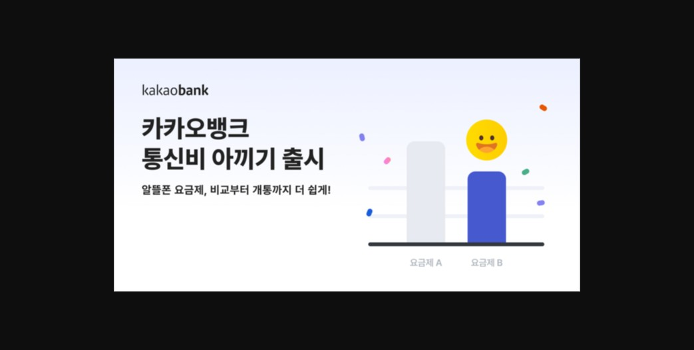

알뜰폰 비교 대표 플랫폼.
연 80만 개통·매출 100억·BEP로 PMF(제품·시장 적합성)는 이미 검증.
CPA 가입중개 중심 성장의
4대 병목(리텐션·외부의존·빅테크·성장세그먼트) 돌파.
개인화 진단 CRM · 서비스형 PB ·
B2B 임베디드 · 신규 세그먼트.
고객 통신 여정 전체를 소유하는
'통신 데이터 플랫폼'으로 리포지셔닝.
빅테크가 통신을 금융의 부가기능으로 다룰 때, 모요는 '통신 전문성 × 가입 타이밍 데이터'로 승부한다.
알뜰폰(MVNO) 시장
모요 트랙션
출처: 이코노믹데일리·전자신문(시장) / 모요 채용·블로터(트랙션). 일부 수치는 시점·자사 발표 기준.
이미 단독 요금제·휴대폰 성지·인터넷·랭킹·커뮤니티까지 폭넓게 운영 중 — 그래서 이 제안은 '아직 비어 있는 4가지'에 집중합니다.
요금제는 매일 쓰는 게 아니라 7~8개월·번호이동 때만 방문. 단골이 안 생김.
▶ 재유입에 CAC 반복 (CAC>LTV)도매대가·정책에 따라 핵심 무기 '0원 요금제' 공급이 좌우됨.
▶ 0원 사라지면 매력도 급감이미 매일 쓰는 금융앱이 비교·개통을 내재화 → 모요 갈 이유 약화.
▶ 토스 19.2만 · KB 43.7만 가입알뜰폰은 1,000만 시대인데, 시니어·가족 등 큰 수요층은 앱 UX 밖에 있음.
▶ 다음 성장 시장(TAM·공략 가능 시장)이 비어 있음핵심은 "한 번 가입시키고 끝" 구조를 → "고객 통신 여정을 계속 소유"하는 구조로 바꾸는 것.
보유한 가입일 데이터로 종료 1개월·1주 전 알림톡 시퀀스 자동화.
이미 보유한 가입 타이밍 데이터로 추가 비용 없이 시작 — 가장 빠른 Quick Win.
▲ 제안 목업 — 개인 진단 + 약정 만료 자동 알림
벤치마킹: 토스 '신용점수' — 점수 보러 매일 들어오는 습관
매달 사용량을 분석해 더 싼 요금제로 자동 전환해 주는 구독형 멤버십.
가입 후 더 싼 요금제가 나오면 차액 보상 또는 무료 전환 보장.
남는 데이터를 이월·가족 선물·모요포인트 환급하는 통신 특화 혜택.
셋 다 '모요가 가진 데이터·비교 엔진'이 있어야 가능 — 0원·사은품과 근본적으로 다른 해자(moat).
트래픽 싸움 대신, 그들에게 없는 통신 전문 비교 엔진을 은행·카드·커머스 앱에 위젯/API로 임베드.
전국민이 쓰는 앱이 모요의 유통망이 됨 → CAC 없이 개통 발생 + 엔진 라이선스(B2B SaaS).

▲ 벤치마킹·검증 — 카카오뱅크 '통신비 아끼기'(2024 출시)
모요 비교엔진이 이미 카뱅 앱 안에서 작동 中
빅테크의 트래픽을 위협이 아닌 채널로 바꾼다 — 모요의 통신 데이터·엔진이 무기.
디지털 네이티브를 넘어, 통신비 부담이 가장 큰 층으로 성장의 다음 문을 연다.
'데이터 얼마나 필요?' 계산기를 전 서비스로 확장:
서비스가 늘수록 이기는 건 '많이 가진 쪽'이 아니라 '쉽게 안내하는 쪽'. (벤치마킹: 토스 홈 — 내게 필요한 것만 큐레이션)
우선순위 원칙 — ① 추가 투자 없이 보유 자산으로 즉시 가능한 리텐션 CRM부터, 그 현금흐름으로 구조 전환·확장에 재투자.
| 전략 방향 | 핵심 측정 지표 (KPIs) | 의미 |
|---|---|---|
| 리텐션 강화 | 가입 6개월 후 재방문율 · 약정 알림 오픈·전환율 | 주기 파괴 여부 |
| 서비스형 PB | 오토파일럿 구독자 수 · 보장제 가입률 · 재구독률 | 외부 의존 탈피 |
| 모요 인사이드(B2B) | 임베디드 파트너 수 · 파트너 경유 개통수 | 새 유통·BM |
| 신규 세그먼트 | 시니어·가족 신규 가입수 · 가족 결합률 | TAM 확장 |
선행지표는 재방문율·구독 전환율 — '가입 건수'(후행)가 아니라 '관계의 깊이'를 본다.
아래 13p 목표 수치는 전략 방향성을 보여주기 위한 가정치 — 실제는 베이스라인 측정 후 확정.
PC 살 땐 '다나와'를 켜듯,
폰·통신은 '모요'를 켜도록.
'가입시키는 곳'을 넘어 통신의 기준이 되는 데이터 플랫폼으로 — 무기는 통신 전문성 × 가입 타이밍 데이터.
기대효과 (12개월 가정 목표)
미션을 가속한다 — "모두에게 통신을 쉽고 정직하게."